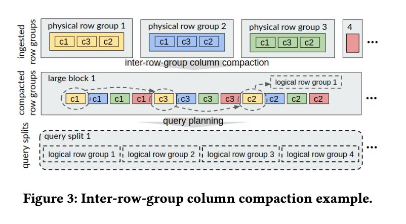

Columnar Storage Optimization and Caching for Data Lakes
Short Paper@2022 因为调研Data Lake下面的Caching所以看了一下这篇文论，感觉好像没啥特别的东西。
总结一下大约几个点，也可能是我看的比较粗，没有太Get到作者们的深层意图：
- 按照column而不是row group进行聚合（Storage Layout Optimization）
- 针对column chunk而不是row group进行缓存（column chunk是一个row group里面的单列）
- lazy cache population/eviction策略
We refer to each column of a row group as a 𝑐𝑜𝑙𝑢𝑚𝑛 𝑐h𝑢𝑛𝑘, which is independently compressed with a domain-specific compression algorithm (e.g., dictionary encod- ing, run-length encoding) to reduce space overheads and I/O costs. Given a query, as projection is pushed down to the table scan operator, it only reads needed column chunks.
However, each existing cache has its limitation. The page cache employs LRU-based policies, and the query engine cannot directly control which part of the data is cached. The hot data that is more worthy of being cached might be evicted by a query that reads a large amount of cold data. The file cache in storage systems and the distributed file caching systems cache entire files or blocks. For PAX layout that stores all the column chunks of a row group in the same file or block, they lead to very low space efficiency.
Storage Layout Optimization将column而不是row group进行聚合，大致思路就是下面这样的，好处就是顺序性好，缺点就是要在后台改写文件格式，这个对于Query Engine来说似乎不太合适，做成单独服务可以让用户触发。

Cache Eviction不是在Population的时候就完成，而是在后台分析之后异步完成的，选择合适的colum chunk删除掉。
In Pixels, we envisage the high efficiency of lazy cache replace- ment. The cache misses in each node are collected by Prometheus (Section 2), without immediately triggering cache replacement. Whenever the workload pattern evolves, the Storage Optimizer calculates the cache efficiency of each column chunk by dividing its hit+miss count by its size. The hit count is stored before each column chunk in the cache area (Figure 4), while the miss count is collected from the cache miss messages in the cache miss MQ. The most-efficient column chunks that do not exceed the cache capacity are included in the new cache plan that is then applied across the cluster. This is based on the temporal locality of the column access.